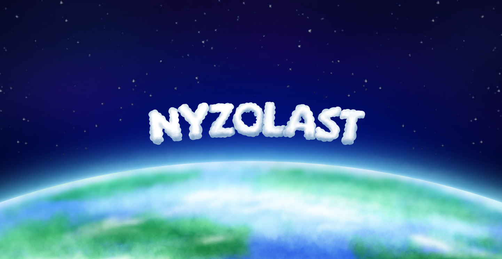
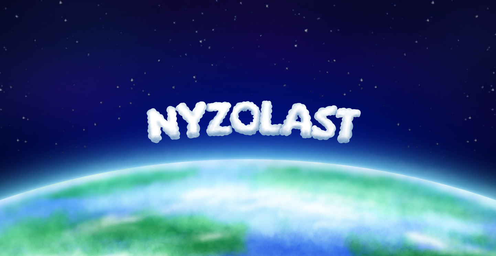

O mnie
Mam 18 lat, uczęszczam do szkoły na profil Technik Informatyk. Cechuje mnie biegła obsługa programów Affinity Designer praz Adobe After Effects. Ponadto dobrze odnajduję się również w innych programach od Adobe: Photoshop, Animate oraz Ilustrator. Poza grafiką interesuję się szeroko pojętą technologią oraz gotowaniem. Szukam pracy, którą mógłbym wykonywać poza szkołą lub w okresie wakacji dlatego też interesuje mnie tryb pracy hybrydowej lub zdalnej oraz elastyczny czas pracy.
Doświadczenie
Przez ostatnie trzy lata pracowałem nad wieloma indywidualnymi projektami, które obejmowały zarówno tworzenie grafik komputerowych, jak i ilustracji cyfrowych. Moje projekty były realizowane dla klientów z różnych branż, co pozwoliło mi na zdobycie wszechstronnych umiejętności i elastyczności w podejściu do zadań. Większość projektów, które stworzyłem miały na celu wykorzystanie ich w social media. Chociaż nie miałem stałej pracy, każdy projekt traktowałem z najwyższą starannością i zaangażowaniem.

 
